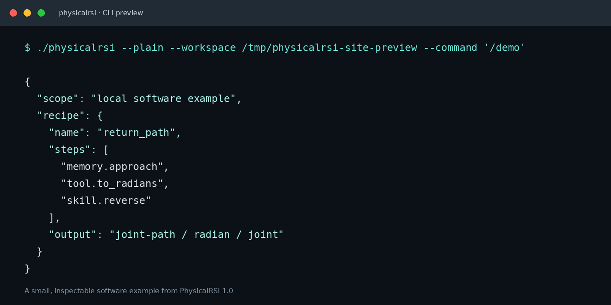

PhysicalRSI 1.0
A compact preview of the PhysicalRSI command line. The CLI is the quickest way to explore demos, memory, and baseline workflows.

A compact preview of the PhysicalRSI command line. The CLI is the quickest way to explore demos, memory, and baseline workflows.
